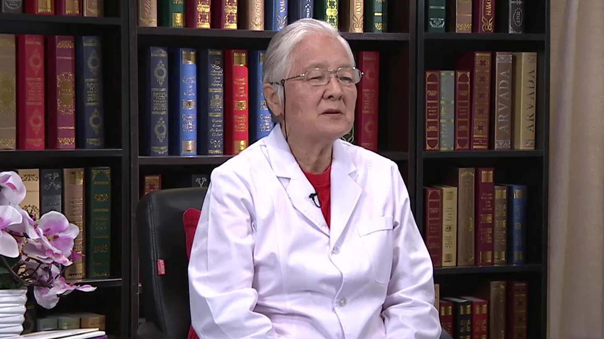

小儿哮喘//陈育智教授¶
陈育智 主任医师¶

首都儿科研究所附属儿童医院哮喘防治中心主任医师 研究员 博士生导师；
全球过敏和哮喘患者联盟（GAAPP）副主席；全球哮喘防治创议（GINA）委员；2015年全球首届GINA大使；过性鼻炎对哮喘影响（ARIA）成员；亚太地区儿科呼吸变态反应学会理事；全国儿科哮喘协作组顾问；北京联众过敏与哮喘健康促进中心名誉理事长。
主要成就： 指导翻译了《全球哮喘防治创议》的系列丛书9本，参与著书6本。并出版科普书籍《哮喘病患者生活指导》及专业书籍《儿童哮喘的诊断及治疗》《小儿哮喘学》等。在国内外发表论文100余篇。
专业特长： 长期从事儿科呼吸道疾病临床及科研工作，特别擅长儿童哮喘与过敏的预防和治疗工作，同时开展培训基层医师的哮喘规范化诊疗工作。